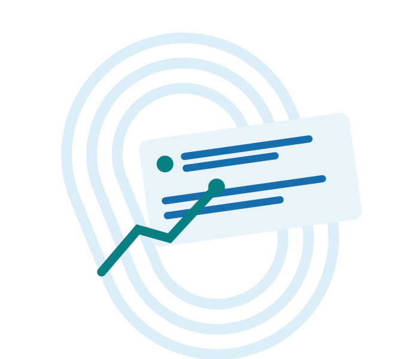

“좋아요. 추천합니다.”
만족은 보이지만
사용 조건은 보이지 않습니다.

무신사 공개 리뷰 101건의 EDA와
러닝 트렌드에서 찾은 구매 판단의 단서
리뷰 확인 2026.10.02 · 트렌드 확인 2026.10.09
만족은 보이지만
사용 조건은 보이지 않습니다.
내 사용 환경과 비교할 수 있는
정보가 남습니다.
이 화면의 문구는 설명용 예시이며 실제 후기 인용이 아닙니다.
5점 후기 비중
높은 평점에 몰린 표본입니다.
평점으로 진위·우열을 판단하지 않습니다.
전체 리뷰 요약 101건 · 반복 본문 포함
러닝화 31건
표본이 상품별로 고르지 않습니다.
수집량은 판매순위가 아닙니다.
분모 101건 · 수집량 기준
러닝을 직접 언급
‘러닝용으로 구매’는 목적입니다.
‘달려본 결과’와 구분해야 합니다.
디자인 → 취향·일상 활용
착용감·경량 → 운동 시 느낌
세탁·핏 → 사용 후 변화
사람이 부여한 요약 태그 · 복수 태그 가능 · 분모 101건
제공·광고·유사 문장 검토
제품을 제공받아도 실제 사용 경험이
있을 수 있습니다. 의심은 확정이 아닙니다.
전체 101건 · 기존 수동 분류 기준
거리, 수납, 착용·세탁 변화
구체적인 사용 경험의 서술
본인의 유상 구매 여부
작성자 진위·독립 구매건 수
피로·기록 변화는 주관적인 경험
원단 말림·땀 자국 의견도 확인
소재가 미끄럽다는 의견도 확인
프린트 변형·색상 차이 의견도 확인
리뷰 요약의 사례 · 원문 인용·성능 검증 결과 아님
2025년 결산의 자체 발표.
상세 비교 기준·집계 정의 미제시.
글로벌 플랫폼의 클럽 지표.
한국 구매자·판매 성장률이 아님.
거리 · 대회 · 날씨
수납 · 착용 · 세탁
가벼움과 내구성
수납과 말림처럼 비교
현재 상품 정보
최근 후기와 제공 표시
검색 노출 편향·상품별 불균형
과거·상대 날짜, 일부 연결 상충
원문 전문·구매 진위 미확인
상품별 같은 수의 최근 후기
정확한 리뷰 ID·작성 날짜
거리·착용·세탁 조건 구분
101건을 읽고 → 실사용 후보 44건을 추렸습니다.
후기의 조건과 불편을 함께 읽으면
내게 필요한 정보를 더 쉽게 찾을 수 있습니다.
질문을 받겠습니다.
전체 EDA: 리뷰 요약 101건 / 반복 2건 포함 / 상품 21종
실사용 후보: 구체 실사용 46건 − 반복 2건 = 44건
검토 대상: 무상제공 8 + 광고 의심 6 + 문장 유사 4 = 18건
태그: 수동 요약 태그 / 복수 응답 / 원문 단어 빈도 아님
외부 자료: 무신사 2025 결산, Strava 2025 Year in Sport
이미지: 현재 SVG 자체 제작 / Nano Banana 에셋 연결 대기